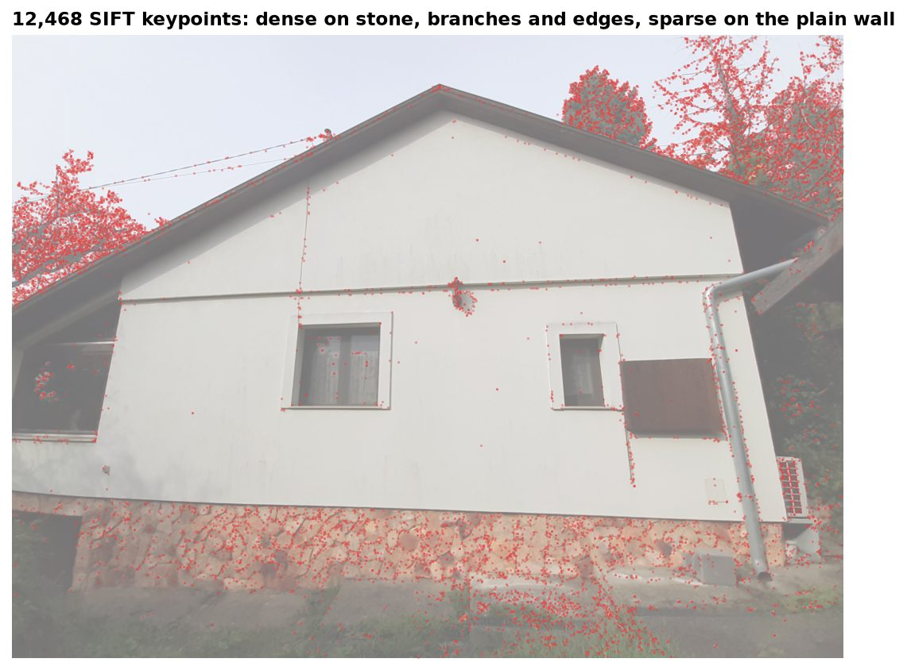
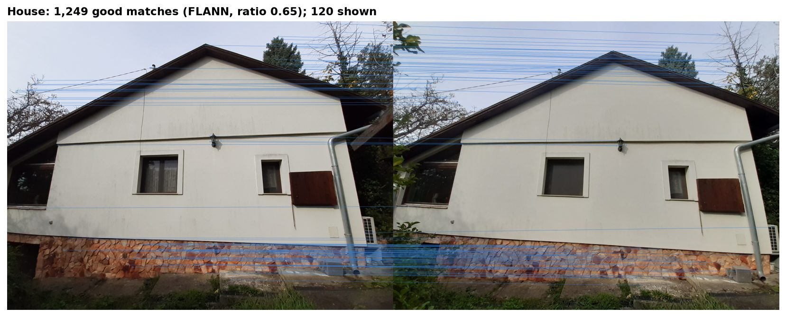
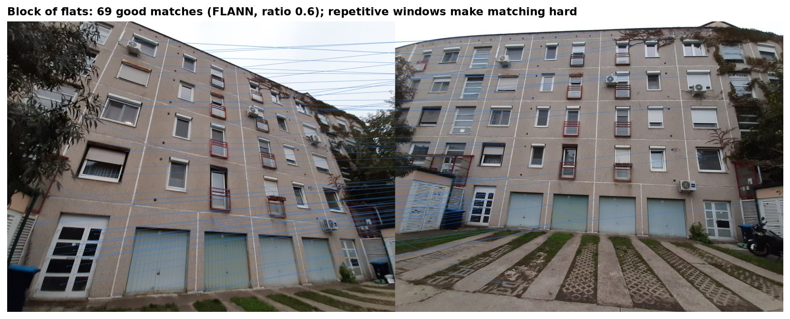

The task
Recognising the same object in two different photos is a basic problem in computer vision. It underlies panorama stitching, 3D reconstruction and object recognition. SIFT (Scale-Invariant Feature Transform, Lowe) finds distinctive points that stay recognisable under changes of scale, rotation and viewpoint.
I took photos of two buildings: the side wall of a house, which also shows tree branches around it, and the facade of a block of flats, which shows only the building, the garage doors and a concrete strip in front. Two different phone cameras and several angles and distances made the task realistic.
How it works
SIFT detects keypoints on both images and describes each one with a 128-dimensional descriptor. For every descriptor in the first image, the matcher finds the two nearest descriptors in the second (k = 2). I used two matchers: a brute-force matcher, and FLANN, a fast approximate nearest-neighbour search on KD-trees.
Not every nearest neighbour is a true match. Lowe's ratio test keeps a match only if the nearest neighbour is clearly closer than the second nearest, for example below 68% of its distance. The lower the ratio, the stricter the filter.

Results


| Image pair | Original analysis | Re-run (FLANN) |
|---|---|---|
| House 1 – 2 | 1,256 | 1,249 |
| Flats 1 – 2 | 67 | 69 |
| Flats 1 – 3 | 30 | 26 |
Re-running the analysis reproduces the original counts closely. The small differences come from FLANN's approximate search and the OpenCV version.
Conclusions
Texture-rich scenes match well, with more than a thousand reliable matches on the house. Repetitive structures are hard: identical windows leave far fewer distinctive matches and produce some false ones. The ratio threshold trades the number of matches for their reliability, and FLANN gives practically the same result as brute-force matching at a fraction of the cost.
Privacy. The photos are my own. All metadata, including location data, was removed before publishing.